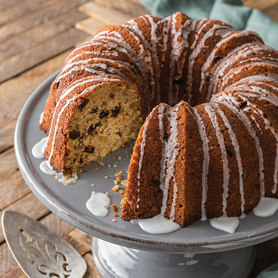

Raisin Necter Cake
by Vera

A vintage nectar cake, referred to as a "war cake" from those who lived through the second World War during food shortages. This cake turns simple ingredients into a heartwarming dessert.

A vintage nectar cake, referred to as a "war cake" from those who lived through the second World War during food shortages. This cake turns simple ingredients into a heartwarming dessert.
Tasty and simple cake, the family could't get enough of it!
It's okay. I don't like rasins so I used dried cranberries and the cake just did't turn out very good.
Great callback recipe, do not be shy with the spices measure to your heart's content!